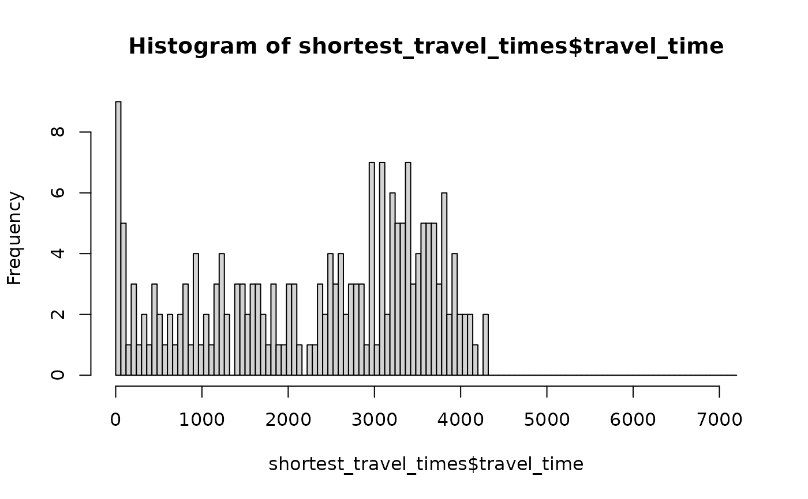

raptor finds the minimal travel time, earliest or latest arrival time for all
stops in stop_times with journeys departing from stop_ids within
time_range.
Usage
raptor(
stop_times,
transfers,
stop_ids,
arrival = FALSE,
time_range = 3600,
max_transfers = NULL,
keep = "all",
separate_starts = FALSE
)Arguments
- stop_times
A (prepared) stop_times table from a gtfs feed. Prepared means that all stop time rows before the desired journey departure time should be removed. The table should also only include departures happening on one day. Use
filter_stop_times()for easier preparation.- transfers
Transfers table from a gtfs feed. In general no preparation is needed. Can be omitted if stop_times has been prepared with
filter_stop_times().- stop_ids
Character vector with stop_ids from where journeys should start (or end). It is recommended to only use stop_ids that are related to each other, like different platforms in a train station or bus stops that are reasonably close to each other.
- arrival
If FALSE (default), all journeys start from
stop_ids. If TRUE, all journeys end atstop_ids.- time_range
Either a range in seconds or a vector containing the minimal and maximal departure time (i.e. earliest and latest possible journey departure time) as seconds or "HH:MM:SS" character. If
arrivalis TRUE,time_rangedescribes the time window when journeys should end atstop_ids.- max_transfers
Maximum number of transfers allowed, no limit (NULL) as default.
- keep
One of c("all", "shortest", "earliest", "latest"). By default,
alljourneys between stop_ids are returned. Withshortestonly the journey with the shortest travel time is returned. Withearliestthe journey arriving at a stop the earliest is returned,latestworks accordingly.- separate_starts
If
FALSE(default), returns all initial transfers among the specifiedstop_ids. IfTRUEeach stop_id is calculated independently. This can lead to faster computation times and is useful when the resulting times betweenfromandto_stop_idswill be aggregated later (e.g. bystop_nameintravel_times()).
Value
A data.table with journeys (departure, arrival and travel time) to/from all
stop_ids reachable by stop_ids.
Details
With a modified Round-Based Public Transit Routing Algorithm
(RAPTOR) using data.table, earliest arrival times for all stops are calculated. If two
journeys arrive at the same time, the one with the later departure time and thus shorter
travel time is kept. By default, all journeys departing within time_range that arrive
at a stop are returned in a table. If you want all journeys arriving at stop_ids within
the specified time range, set arrival to TRUE.
Journeys are defined by a "from" and "to" stop_id, a departure, arrival and travel time. Note that exact journeys (with each intermediate stop and route ids for example) are not returned.
For most cases, stop_times needs to be filtered, as it should only contain trips
happening on a single day, see filter_stop_times(). The algorithm scans all trips
until it exceeds max_transfers or all trips in stop_times have been visited.
See also
travel_times() for an easier access to travel time calculations via stop_names.
Examples
# \donttest{
nyc_path <- system.file("extdata", "nyc_subway.zip", package = "tidytransit")
nyc <- read_gtfs(nyc_path)
# you can use initial walk times to different stops in walking distance (arbitrary example values)
stop_ids_harlem_st <- c("301", "301N", "301S")
stop_ids_155_st <- c("A11", "A11N", "A11S", "D12", "D12N", "D12S")
walk_times <- data.frame(stop_id = c(stop_ids_harlem_st, stop_ids_155_st),
walk_time = c(rep(600, 3), rep(410, 6)), stringsAsFactors = FALSE)
# Use journeys departing after 7 AM with arrival time before 11 AM on 26th of June
stop_times <- filter_stop_times(nyc, "2018-06-26", 7*3600, 9*3600)
# calculate all journeys departing from Harlem St or 155 St between 7:00 and 7:30
rptr <- raptor(stop_times, nyc$transfers, walk_times$stop_id, time_range = 1800,
keep = "all")
# add walk times to travel times
rptr <- merge(rptr, walk_times, by.x = "from_stop_id", by.y = "stop_id")
rptr$travel_time_incl_walk <- rptr$travel_time + rptr$walk_time
# get minimal travel times (with walk times) for all stop_ids
library(data.table)
#>
#> Attaching package: ‘data.table’
#> The following objects are masked from ‘package:dplyr’:
#>
#> between, first, last
shortest_travel_times <- setDT(rptr)[order(travel_time_incl_walk)][, .SD[1], by = "to_stop_id"]
hist(shortest_travel_times$travel_time, breaks = seq(0,2*60)*60)

# }